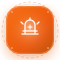
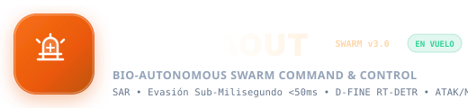
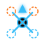
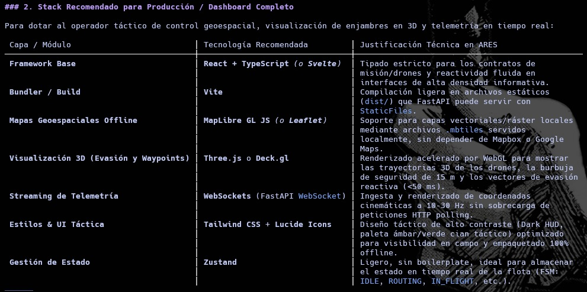

BIOSCAOUT TACTICAL DESIGN SYSTEM
Tema, Animaciones, Keyframes y Logos Vectoriales Oficiales
Logotipo Horizontal Completo

Archivo: logos/logo_bioscaout_principal.svg
Insignia Badge Flotante (Con Animación Float)
Archivo: logos/logo_bioscaout_badge.svg
Favicon Polígono
logo_bioscaout_icon.svg
Cruz Médica SAR
logo_cross_tactical.svg
Silueta UAV Radar

drone_tactical_symbol.svg
Referencia Original

referencia_arquitectura_ui.jpeg
Desplazamiento vertical suave de -4px para drones, insignias y elementos dinámicos.
Respiración de escala (1.18x) y opacidad para indicar telemetría viva a 20 Hz.
Pulsación de resplandor carmesí con sombra interna para estados de grabación forense.
Resplandor de neón cian envolvente de hasta 25px de difusión.
Gradiente lineal traslúcido desplazable para estados esqueléticos de carga.
Onda de choque esmeralda expansiva para nuevos objetivos y sobrevivientes.